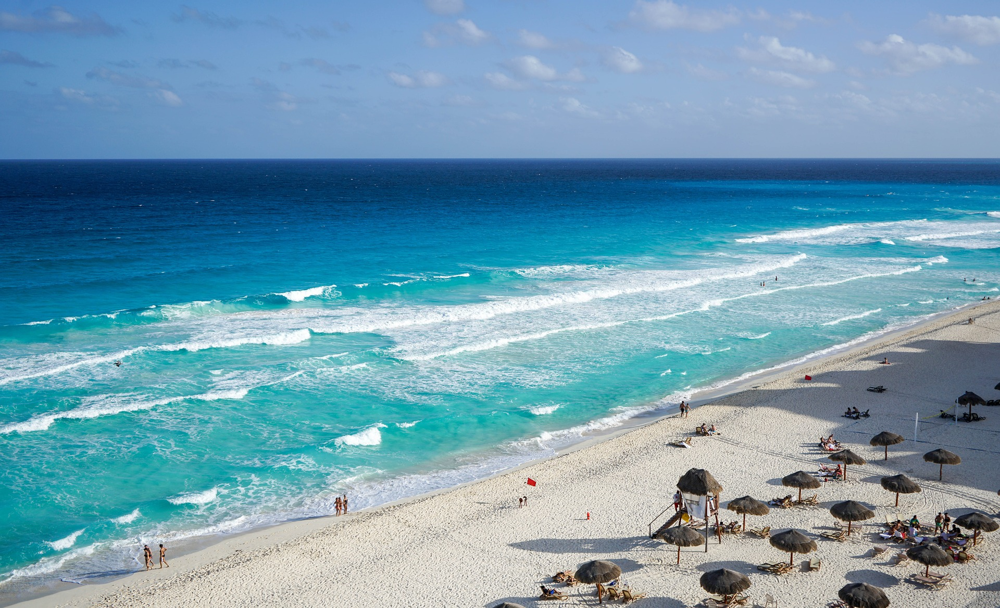
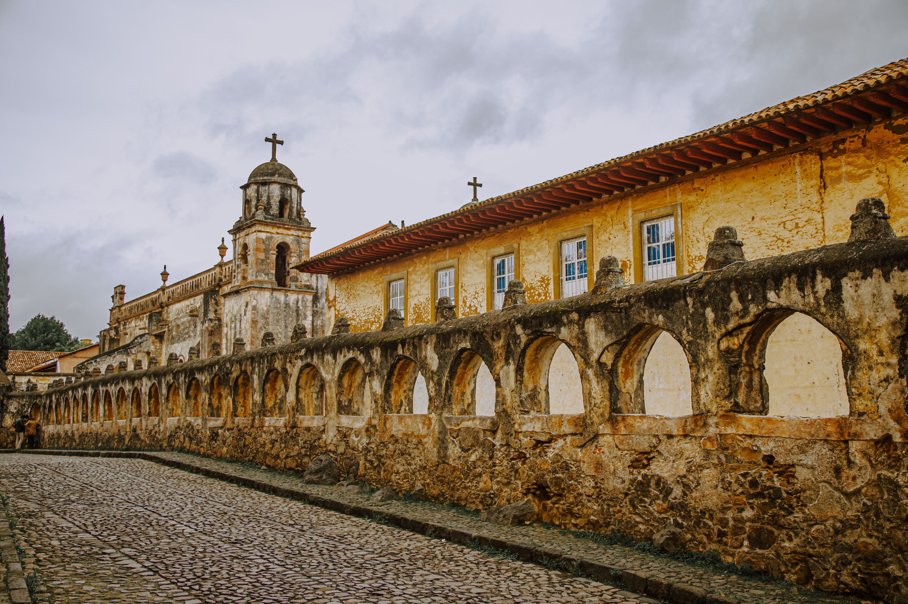

Best places to Tarvel
Mexico has a lot of amazing places to visit, here are some of the top destinations that you might want to consider:
- Cancun
- A popular destination for beach lovers, Cancun is known for its turquoise waters, white sand beaches, and vibrant nightlife.
- Mexico City
- The capital of Mexico is a City that has a rich history, vibrant culture, and world-class museums and galleries.
- Tulum
- A picturesque coastal town in the Yucatan Peninsula, Tulum is known for its stunning beaches and ancient Mayan ruins.
- Oaxaca
- A colonial city in southern Mexico, Oaxaca is known for its colorful markets, traditional crafts, and delicious cuisine.
- Purto Vallarta
- A charming coastal town on the Pacific coast, Puerto Vallarta is known for its beautiful beaches, scenic boardwalk, and lively arts and culture scene.
Pueblos Magicos
A "Pueblo Mágico" is a designation given by the Mexican government to towns and cities that have been recognized for their natural beauty, cultural heritage, and unique traditions. There are currently over 120 Pueblos Mágicos in Mexico, each with its own distinct character and charm. These towns and cities are known for their scenic beauty, historic architecture, and vibrant culture, and they offer visitors a chance to experience the authentic traditions and customs of Mexico. Some popular Pueblos Mágicos include San Miguel de Allende, Taxco, and Tequila, but there are many other lesser-known gems waiting to be discovered as well.
You Got to See
Mexico has many stunning natural landscapes and historic landmarks that offer breathtaking views. Some of the best view sites in Mexico include:
- Copper Canyon
- Located in the northern state of Chihuahua, Copper Canyon is a series of six interconnected canyons that are deeper and wider than the Grand Canyon. The canyon offers spectacular views of rugged cliffs, winding rivers, and lush forests.
- Sumidero Canyon
- Located in the southern state of Chiapas, Sumidero Canyon is a narrow gorge that stretches for over 13 miles and reaches depths of up to 3,000 feet. The canyon offers stunning views of towering cliffs, cascading waterfalls, and abundant wildlife.
- Palacio de Bellas Artes
- Located in Mexico City, the Palacio de Bellas Artes is a stunning Art Nouveau building that houses some of Mexico's most important cultural institutions. From the rooftop terrace, visitors can enjoy panoramic views of the city's historic center and surrounding neighborhoods.
- Chichen Itza
- Located in the Yucatan Peninsula, Chichen Itza is an ancient Mayan city that is one of Mexico's most popular tourist destinations. From the top of the El Castillo pyramid, visitors can enjoy sweeping views of the surrounding jungle and countryside.
- Cabo San Lucas Arch
- Located at the southern tip of the Baja California Peninsula, the Cabo San Lucas Arch is a natural rock formation that rises out of the ocean. Visitors can take a boat tour to see the arch up close and enjoy stunning views of the Pacific Ocean and Sea of Cortez.